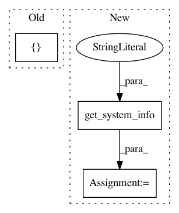

0ad7e3a3f558ea70ea895f7501868d641cff90f6,scipy/special/setup.py,,configuration,#Any#Any#,16
Before Change
cfg.setdefault("libraries", []).extend(
["sc_amos", "sc_cephes", "sc_mach", "sc_cdf", "sc_specfun"]
)
cfg.setdefault("define_macros", []).extend(define_macros)
config.add_extension("cython_special",
depends=cython_special_dep,
sources=cython_special_src,
After Change
config = Configuration("special", parent_package, top_path)
if uses_blas64():
lapack_opt = get_system_info("lapack_ilp64_opt")
else:
lapack_opt = get_system_info("lapack_opt")
define_macros = []
if sys.platform == "win32":
// define_macros.append(("NOINFINITIES",None))
// define_macros.append(("NONANS",None))
define_macros.append(("_USE_MATH_DEFINES",None))
curdir = os.path.abspath(os.path.dirname(__file__))
python_inc_dirs = get_python_inc()
plat_specific_python_inc_dirs = get_python_inc(plat_specific=1)
inc_dirs = [get_numpy_include_dirs(), python_inc_dirs]
if python_inc_dirs != plat_specific_python_inc_dirs:
inc_dirs.append(plat_specific_python_inc_dirs)
inc_dirs.append(join(dirname(dirname(__file__)), "_lib"))
inc_dirs.append(join(dirname(dirname(__file__)), "_build_utils", "src"))
// C libraries
cephes_src = [join("cephes","*.c")]
cephes_hdr = [join("cephes", "*.h")]
config.add_library("sc_cephes",sources=cephes_src,
include_dirs=[curdir] + inc_dirs,
depends=(cephes_hdr + ["*.h"]),
macros=define_macros)
// Fortran/C++ libraries
mach_src = [join("mach","*.f")]
amos_src = [join("amos","*.f")]
cdf_src = [join("cdflib","*.f")]
specfun_src = [join("specfun","*.f")]
config.add_library("sc_mach",sources=mach_src,
config_fc={"noopt":(__file__,1)})
config.add_library("sc_amos",sources=amos_src)
config.add_library("sc_cdf",sources=cdf_src)
config.add_library("sc_specfun",sources=specfun_src)
// Extension specfun
config.add_extension("specfun",
sources=["specfun.pyf"],
f2py_options=["--no-wrap-functions"],
depends=specfun_src,
define_macros=[],
libraries=["sc_specfun"])
// Extension _ufuncs
headers = ["*.h", join("cephes", "*.h")]
ufuncs_src = ["_ufuncs.c", "sf_error.c", "_logit.c.src",
"amos_wrappers.c", "cdf_wrappers.c", "specfun_wrappers.c"]
ufuncs_dep = (
headers
+ ufuncs_src
+ amos_src
+ cephes_src
+ mach_src
+ cdf_src
+ specfun_src
)
cfg = combine_dict(lapack_opt,
include_dirs=[curdir] + inc_dirs + [numpy.get_include()],
libraries=["sc_amos", "sc_cephes", "sc_mach",
"sc_cdf", "sc_specfun"],
define_macros=define_macros)
config.add_extension("_ufuncs",
depends=ufuncs_dep,
sources=ufuncs_src,
extra_info=get_info("npymath"),
**cfg)
// Extension _ufuncs_cxx
ufuncs_cxx_src = ["_ufuncs_cxx.cxx", "sf_error.c",
"_faddeeva.cxx", "Faddeeva.cc",
"_wright.cxx", "wright.cc"]
ufuncs_cxx_dep = (headers + ufuncs_cxx_src + cephes_src
+ ["*.hh"])
config.add_extension("_ufuncs_cxx",
sources=ufuncs_cxx_src,
depends=ufuncs_cxx_dep,
include_dirs=[curdir] + inc_dirs,
define_macros=define_macros,
extra_info=get_info("npymath"))
cfg = combine_dict(lapack_opt, include_dirs=inc_dirs)
config.add_extension("_ellip_harm_2",
sources=["_ellip_harm_2.c", "sf_error.c",],
**cfg)
In pattern: SUPERPATTERN
Frequency: 3
Non-data size: 3
Instances
Project Name: scipy/scipy
Commit Name: 0ad7e3a3f558ea70ea895f7501868d641cff90f6
Time: 2020-05-13
Author: pav@iki.fi
File Name: scipy/special/setup.py
Class Name:
Method Name: configuration
Project Name: scipy/scipy
Commit Name: bab178f3003adaad353879d3fd891e4c5a5e5e7f
Time: 2014-11-23
Author: pav@iki.fi
File Name: scipy/special/setup.py
Class Name:
Method Name: configuration
Project Name: scipy/scipy
Commit Name: b285550bb05edea1c85789f93c42dbb5676fc284
Time: 2016-10-27
Author: person142@users.noreply.github.com
File Name: scipy/special/setup.py
Class Name:
Method Name: configuration